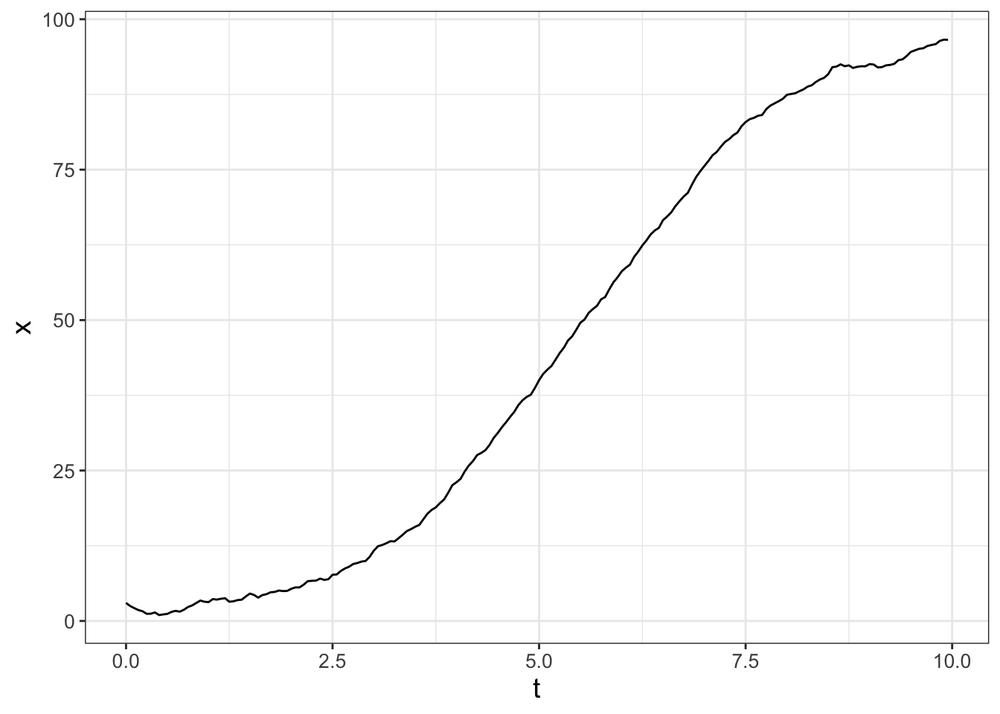
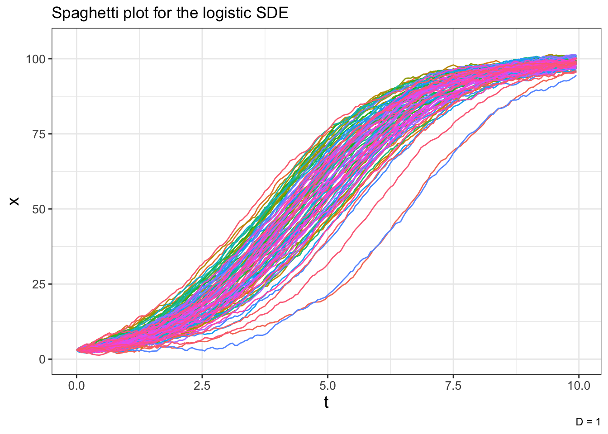
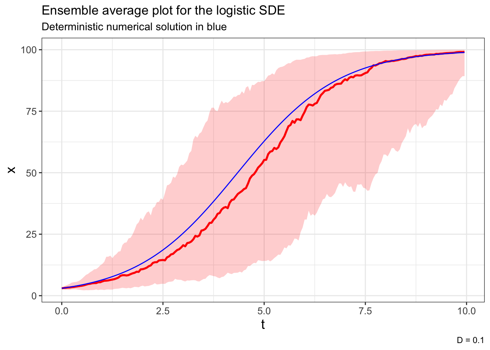
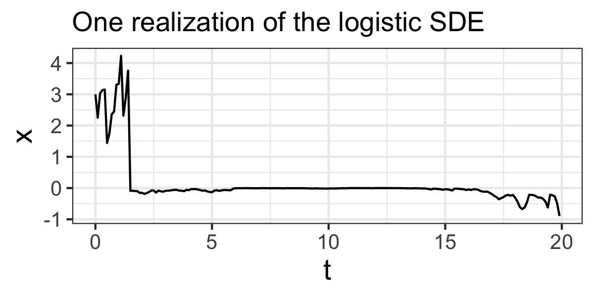
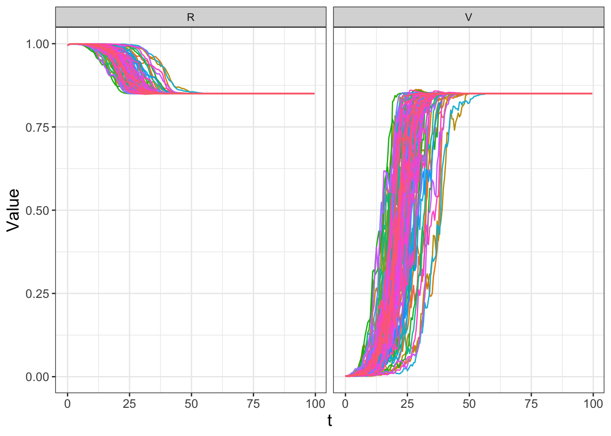
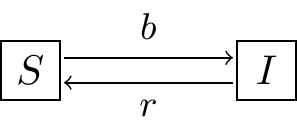

# Identify the deterministic and stochastic parts of the DE:
deterministic_logistic <- c(dx ~ r*x*(1-x/K))
stochastic_logistic <- c(dx ~ 1)
# Identify the initial condition and any parameters
init_logistic <- c(x=3)
logistic_parameters <- c(r=0.8, K=100) # parameters: a named vector
# Identify how long we run the simulation
deltaT_logistic <- .05 # timestep length
timesteps_logistic <- 200 # must be a number greater than 1
# Identify the standard deviation of the stochastic noise
D_logistic <- 1
# Do one simulation of this differential equation
logistic_out <- euler_stochastic(
deterministic_rate = deterministic_logistic,
stochastic_rate = stochastic_logistic,
initial_condition = init_logistic,
parameters = logistic_parameters,
deltaT = deltaT_logistic,
n_steps = timesteps_logistic,
D = D_logistic
)
# Plot out the solution
ggplot(data = logistic_out) +
geom_line(aes(x=t,y=x))25 Simulating Stochastic Differential Equations
In this chapter we will begin to combine our knowledge of random walks to numerically simulate stochastic differential equations, or SDEs for short. Here is the good news: our previous work comes into focus. This chapter returns to a specific model you are familiar with (the logistic differential equation) and examines it stochastically. Hopefully this specific example will allow you to see how the methods developed here work in other contexts. Let’s get started!
Note
This chapter uses following libraries: ggplot2, tibble, and purrr (all part of the tidyverse) and demodelr. See Section 2.3 on how to install packages. Prior to running any code in this section, include library(tidyverse) and library(demodelr).
25.1 The stochastic logistic model
Equation 25.1 begins with the logistic differential equation, but written a little differently by multiplying the differential \(dt\) to the right hand side:
\[ dx = rx \left(1 - \frac{x}{K} \right) \; dt \tag{25.1}\]
One way to interpret Equation 25.1 is that a small change is the variable \(x\) (denoted is \(dx\)), which is equal to the rate \(\displaystyle rx \left(1 - \frac{x}{K} \right)\) multiplied by \(dt\).
A direct way to incorporate stochastics is to modify Equation 25.1 by incorporating aspects of Brownian motion, as shown with Equation 25.2:
\[ dx = \underbrace{rx \left(1 - \frac{x}{K} \right) \; dt}_{\text{Deterministic part}} + \underbrace{\sqrt{2D \, dt} \, \mathcal{N}(0,1)}_{\text{Stochastic part}} \tag{25.2}\]
In Equation 25.2, \(D\) represents the diffusion coefficient and \(\mathcal{N}(0,1)\) signifies the normal distribution with mean zero and variance one.1
It may seem odd to express Equation 25.2 in this form (i.e. \(dx = ...\) versus \(\displaystyle \frac{dx}{dt} = ...\)). However a good way to think of this stochastic differential equation is that a small change in the variable \(x\) (represented by the term \(dx\)) is computed in two ways:
\[ \begin{split} \mbox{Deterministic part: } & rx \left(1 - \frac{x}{K} \right) \; dt \\ \mbox{Stochastic part: } & \sqrt{2D \, dt} \, \mathcal{N}(0,1) \end{split} \tag{25.3}\]
To simplify things somewhat we will represent \(\sqrt{2D \, dt} \, \mathcal{N}(0,1)\) in Equation 25.2 with \(dW(t)\), so that \(dW(t)=\sqrt{2D \, dt} \, \mathcal{N}(0,1)\). The term \(dW(t)\) can be thought of as similar to a stochastic differential equation \(\displaystyle \frac{dW}{dt} = \sqrt{2D \, dt}\), with \(W(0)=0\). The solution \(W(t)\) is also representative of a Weiner process. See Logan and Wolesensky (2009) For more information. In most cases a Weiner process does not include the term \(\sqrt{2D}\) (effectively \(D=\frac{1}{2}\)). It is helpful to keep the term \(D\) as a control parameter for simulating the SDE (see Exercises 25.1 - 25.3).
How does the stochastic part of this differential equation change the solution trajectory? It turns out that the “exact” solutions to problems like these are difficult (we will study a sample of exact solutions to SDEs in Chapter 27). Rather than focus on exact solution techniques we will apply the workflow developed in Chapter 22 (Do once \(\rightarrow\) Do several times \(\rightarrow\) Summarize \(\rightarrow\) Visualize) by simulating several solution trajectories and then taking the ensemble average at each of the time points.
25.2 The Euler-Maruyama method
One way to numerically solve a stochastic differential equation begins with a variation of Euler’s method. The Euler-Maruyama method accounts for stochasticity and implements the random walk (Brownian motion). We will build this method up step by step.
Like Euler’s method, the Euler-Maruyama method begins by writing the differential \(dx\) as a difference: \(dx = x_{n+1}-x_{n}\), where \(n\) is the current step of the method. Likewise \(dW(t) = W_{n+1} - W_{n}\), which represents one step of the random walk, but we approximate this difference by \(\sqrt{2D \Delta t} \mathcal{N}(0,1)\), where \(\Delta t\) is the timestep length. Given \(\Delta t\), diffusion coefficient \(D\), and starting value \(x_{0}\), we can define the following method.
- From the initial condition \(x_{0}\), compute the value at the next time step (\(x_{0}\)), which for Equation 25.2 is:
\[ x_{1} = x_{0} + rx_{0} \left(1 - \frac{x_{0}}{K} \right) \; \Delta t + \sqrt{2D \, \Delta t} \, \mathcal{N}(0,1) \]
- Repeat this iteration to step \(n\), where \(\mathcal{N}(0,1)\) is re-computed at each timestep:
\[ x_{n} = x_{n-1} + rx_{n-1} \left(1 - \frac{x_{n-1}}{K} \right) \; \Delta t + \sqrt{2D \Delta t} \, \mathcal{N}(0,1) \]
That is it! We can apply this numerical method for as many steps as we want. In the demodelr package the function euler_stochastic will apply the Euler-Maruyama method to a stochastic differential equation. Just like the functions euler or rk4 there are some things that need to be set first:
- The size (\(\Delta t\)) of your timestep.
- The value of the diffusion coefficient \(D\) (we will discuss this later).
- The number of timesteps you wish to run the method. More timesteps means more computational time. If \(N\) is the number of timesteps, \(\Delta t \cdot N\) is the total time.
- A function for our deterministic dynamics. For Equation 25.1 this equals \(\displaystyle rx \left(1 - \frac{x}{K} \right)\).
- A function for our stochastic dynamics. For Equation 25.1 this equals 1.
- The values of the vector of parameters \(\vec{\alpha}\). For the logistic differential equation we will take \(r=0.8\) and \(K=100\).
Sample code for this stochastic differential equation is shown below, with the resulting trajectory of the solution in Figure 25.1.

Let’s break the code down to generate Figure 25.1 step by step:
- We identify the deterministic and stochastic parts to our differential equation with the variables
deterministic_logisticandstochastic_logistic. The same structure is used for Euler’s method from Chapter 4. - Similar to Euler’s method we need to identify the initial conditions (
init_logistic), parameters (logistic_parameters), \(\Delta t\) (deltaT_logistic), and number of timesteps (timesteps_logistic). - The diffusion coefficient for the stochastic process (\(D\)) is represented with
D_logistic. - The command
euler_stochasticdoes one realization of the Euler-Maruyama method.
25.2.1 Do several times
Figure 25.1 shows one sample trajectory of our solution, but there is benefit to running several simulations and then plotting out all the solution trajectories together. The code presented below accomplishes that task and makes a plot of all the solution trajectories (Figure 25.2). This code is similar to code presented in Chapter 22. As you may recall, the main engine of the code is contained in the map( ~ euler_stochastic ... ) which re-runs the codes for the number of times specified in n_sims. Notice the use of labs(caption = "D = 1") to add a small caption in the lower right hand corner of the plot to indicate the value of the diffusion coefficient used for the simulations.
# Many solutions
n_sims <- 100 # The number of simulations
# Compute solutions
logistic_run <- map(1:n_sims, ~ list()) |>
set_names(paste0("sim", 1:n_sims)) |>
map(~ euler_stochastic(deterministic_rate = deterministic_logistic,
stochastic_rate = stochastic_logistic,
initial_condition = init_logistic,
parameters = logistic_parameters,
deltaT = deltaT_logistic,
n_steps = timesteps_logistic,
D = D_logistic)) |>
map_dfr(~ .x, .id = "simulation")
# Plot these all together
ggplot(data = logistic_run) +
geom_line(aes(x=t, y=x, color = simulation)) +
ggtitle("Spaghetti plot for the logistic SDE") +
guides(color="none") +
labs(caption = "D = 1")
25.2.2 Summarize and Visualize
The code used to generate the ensemble average for the different simulations is shown below (try running this out on your own). This code is similar to ones presented in Chapter @ref(stoch-sim-22). The variable summarized_logistic first groups the simulations by the variable t in order to compute the quantiles across each of the simulations.
# Compute Quantiles and summarize
quantile_vals <- c(0.025, 0.5, 0.975)
### Summarize the variables
summarized_logistic <- logistic_run |>
group_by(t) |>
reframe(
q_val = quantile(x, # x is the column to compute the quantiles
probs = quantile_vals
),
q_name = quantile_vals
) |>
pivot_wider(names_from = "q_name", values_from = "q_val",
names_glue = "q{q_name}")
### Make the plot
ggplot(data = summarized_logistic) +
geom_line(aes(x = t, y = q0.5)) +
geom_ribbon(aes(x=t,ymin=q0.025,ymax=q0.975),alpha=0.2) +
ggtitle("Ensemble average plot for the logistic SDE") +
labs(caption = "D = 1")25.3 Adding stochasticity to parameters
A second approach for modeling SDEs is to assume that the parameters are stochastic. For example, let’s say that the growth rate \(r\) in the logistic differential equation is subject to stochastic effects. How we would implement this is by replacing \(r\) with \(r + \mbox{ Noise }\):
\[ dx = (r + \mbox{ Noise} ) \; x \left(1 - \frac{x}{K} \right) \; dt \]
Now what we do is separate out the terms that are multiplied by “Noise” - they will form the stochastic part of the differential equation. The terms that aren’t multipled by “Noise” form the deterministic part of the differential equation:
\[ dx = r x \left(1 - \frac{x}{K} \right) \; dt + x \left(1 - \frac{x}{K} \right) \mbox{ Noise } \; dt \tag{25.4}\]
When we write \(\mbox{ Noise } \; dt = dW(t)\), then the deterministic and stochastic parts to Equation 25.4 are easily identified:
\[ \begin{split} \mbox{Deterministic part: } & rx \left(1 - \frac{x}{K} \right) \; dt \\ \mbox{Stochastic part: } & x \left(1 - \frac{x}{K} \right) dW(t) \end{split} \tag{25.5}\]
There are a few things to notice with Equation 25.5. First, the deterministic part of the differential equation is what we would expect without incorporating the “Noise” term. Second, notice how the stochastic part of Equation 25.5 changed compared to Equation 25.3. Given these differences, let’s see what happens when we simulate this SDE!
25.3.1 Do once
The following code will produce one realization of Equation 25.4, denoting the deterministic and stochastic parts as deterministic_logistic_r and stochastic_logistic_r respectively. We will also change the value of the diffusion coefficient \(D\) to equal 0.1. I encourage you to try this code on your own.
# Identify the deterministic and stochastic parts of the DE:
deterministic_logistic_r <- c(dx ~ r*x*(1-x/K))
stochastic_logistic_r <- c(dx ~ x*(1-x/K))
# Identify the initial condition and any parameters
init_logistic <- c(x=3)
logistic_parameters <- c(K=100,r=0.8) # parameters: a named vector
# Identify how long we run the simulation
deltaT_logistic <- .05 # timestep length
timesteps_logistic <- 200 # must be a number greater than 1
# Identify the standard deviation of the stochastic noise
D_logistic <- 0.1
# Do one simulation of this differential equation
logistic_out_r <- euler_stochastic(
deterministic_rate = deterministic_logistic_r,
stochastic_rate = stochastic_logistic_r,
initial_condition = init_logistic,
parameters = logistic_parameters,
deltaT = deltaT_logistic,
n_steps = timesteps_logistic,
D = D_logistic
)
# Plot out the solution
ggplot(data = logistic_out_r) +
geom_line(aes(x=t,y=x))25.3.2 Do several times
As we did before, we can run multiple iterations of Equation 25.4, which you can also try on your own. When you do this, does the resulting spaghetti plot look the same as or different from Figure 25.2? What could be some possible reasons for any differences?
# Many solutions
n_sims <- 100 # The number of simulations
# Identify the standard deviation of the stochastic noise
D_logistic <- 0.1
# Compute solutions
logistic_run_r <- map(1:n_sims, ~ list()) |>
set_names(paste0("sim", 1:n_sims)) |>
map(~ euler_stochastic(deterministic_rate = deterministic_logistic_r,
stochastic_rate = stochastic_logistic_r,
initial_condition = init_logistic,
parameters = logistic_parameters,
deltaT = deltaT_logistic,
n_steps = timesteps_logistic,
D = D_logistic)
) |>
map_dfr(~ .x, .id = "simulation")
# Plot these all together
ggplot(data = logistic_run_r) +
geom_line(aes(x=t, y=x, color = simulation)) +
ggtitle("Spaghetti plot for the logistic SDE") +
guides(color="none") +
labs(caption = "D = 0.1")25.3.3 Summarize and Visualize
Now after running several different simulations we can plot the ensemble average, shown in Figure 25.3, where we also use the rk4 method to plot the numerical solution to the deterministic part of the SDE as well2:
# Apply the rk4 method to numerically solve the deterministic solution:
log_soln_DE = rk4(deterministic_logistic_r, init = init_logistic, param = logistic_parameters,
deltaT =deltaT_logistic, n_steps = timesteps_logistic)
# Compute Quantiles and summarize
quantile_vals <- c(0.025, 0.5, 0.975)
# Summarize the variables
summarized_logistic <- logistic_run |>
group_by(t) |>
reframe(
q_val = quantile(x, # x is the column to compute the quantiles
probs = quantile_vals
),
q_name = quantile_vals
) |>
pivot_wider(names_from = "q_name", values_from = "q_val",
names_glue = "q{q_name}")
# Make the plot, including the solution to the deterministic SDE
ggplot(data = summarized_logistic) +
geom_line(aes(x = t, y = q0.5)) +
geom_ribbon(aes(x=t,ymin=q0.025,ymax=q0.975),alpha=0.2) +
geom_line(data = log_soln_DE,aes(x=t,y=x),color='blue') +
ggtitle("Ensemble average plot for the logistic SDE") +
labs(caption = "D = 0.1",
subtitle = "Deterministic numerical solution in blue")
The results you obtain in Figure 25.3 might look similar to the ensemble average from simulations of Equation 25.2, but perhaps with more variability (represented in the shading for the 95% confidence interval). Letting \(r\) be a stochastic parameter affects how quickly the solution \(x\) increases to the carrying capacity at \(x=100\).
25.3.4 When you may have odd results
Let’s discuss failure and other oddities when simulating SDEs. Figure 25.4 shows one odd realization of Equation 25.4:

Notice in Figure 25.4 how the variable \(x\) has values that are negative. Is this a problem? … Maybe. As with analyzing (non-stochastic) differential equations, unanticipated results may be a signal of the following:
- You may have an error in the coding of the SDE (always double-check your work!)
- You chose too large of a timestep \(\Delta t\). For Brownian motion, the variance grows proportional to \(\Delta t\), so larger timesteps mean more variability when you simulate a random variable, which leads to larger stochastic jumps. (To be fair, large values of \(\Delta t\) are also a shortcoming of Euler’s method.)
- Similar to the last point, the value of \(D\) may be too large. Recall that \(D\) is the diffusion coefficient and affects the rate of spread. Try setting \(D=0\) and seeing if that produces a result in line with your expectation from the (non-stochastic) differential equation.
- The Euler-Maruyama may cause the variable to move across an equilibrium solution, thereby undergoing a change in the long-term behavior.3 For the logistic equation, we know that \(x=0\) is a unstable equilibrium solution. If for this instance \(x\) becomes negative in Figure 25.4, it will move (quickly) away from \(x=0\) in the negative direction.
- Sometimes you may get NaN values in your simulations. You may still be able to compute the ensemble average, but you will need add to the following
na.rm = TRUEin yourquantilecommand (using the variablelogistic_runas an example):
# Summarize the variables
summarized_logistic <- logistic_run |>
group_by(t) |>
reframe(
q_val = quantile(x, # x is the column to compute the quantiles
probs = quantile_vals
na.rm = TRUE), # Note the include of na.rm = TRUE
q_name = quantile_vals
) |>
pivot_wider(names_from = "q_name", values_from = "q_val",
names_glue = "q{q_name}")The last point is not a fault of the numerical method, but rather a feature of the differential equation. It is always helpful to understand your underlying dynamics before you start to implement a stochastic process!
25.4 Systems of stochastic differential equations
To incorporate stochastic effects with a system of differential equations the process is similar to above, with a few changes. First, we need to keep track of the deterministic and stochastic parts for each variable. Second, when we summarize our results in computing the ensemble averages we also need to group by each of the variables. Let’s take a look at an example.
Let’s revisit the tourism model from Chapter 13. This model described in Equation 25.6 relies on two non-dimensonal scaled variables: \(R\), which is the amount of the resource (as a percentage), and \(V\), the percentage of visitors that could visit (also as a percentage).
\[ \begin{split} \frac{dR}{dt}&=R\cdot (1-R)-aV \\ \frac{dV}{dt}&=b\cdot V \cdot (R-V) \end{split} \tag{25.6}\]
Equation 25.6 has two parameters \(a\) and \(b\), which relate to how the resource is used up as visitors come (\(a\)) and how as the visitors increase, word of mouth leads to a negative effect of it being too crowded (\(b\)). Sinay and Sinay (2006) reported \(a=0.15\) and \(b=0.3316\). Let’s assume that \(b\) is stochastic, leading to the following deterministic and stochastic parts to Equation 25.6:
- Deterministic part for \(\displaystyle \frac{dR}{dt}\): \(R\cdot (1-R)-aV\)
- Stochastic part for \(\displaystyle \frac{dR}{dt}\): 0
- Deterministic part for \(\displaystyle \frac{dV}{dt}\): \(b\cdot V \cdot (R-V)\)
- Stochastic part for \(\displaystyle \frac{dV}{dt}\): \(V \cdot (R-V)\)
Now we will apply the established workflow. The code to generate one realization of this stochastic process (the “Do once” step) is shown below (try this out on your own):
# Identify the deterministic and stochastic parts of the DE:
deterministic_tourism<- c(dr ~ R*(1-R)-a*V, dv ~ b*V*(R-V))
stochastic_tourism <- c(dr ~ 0, dv ~ V*(R-V))
# Identify the initial condition and any parameters
init_tourism <- c(R = 0.995, V = 0.00167)
tourism_parameters <- c(a = 0.15, b = 0.3316) #
deltaT_tourism <- .5 # timestep length
timeSteps_tourism <- 200 # must be a number greater than 1
# Identify the diffusion coefficient
D_tourism <- .05
# Do one simulation of this differential equation
tourism_out <- euler_stochastic(
deterministic_rate = deterministic_tourism,
stochastic_rate = stochastic_tourism,
initial_condition = init_tourism,
parameters = tourism_parameters,
deltaT = deltaT_tourism,
n_steps = timeSteps_tourism,
D = D_tourism
)
# We will pivot the data to ease in plotting:
tourism_revised <- tourism_out |>
pivot_longer(cols=c("R","V"))
# Plot out the solution
ggplot(data = tourism_revised) +
geom_line(aes(x=t,y=value)) +
facet_grid(.~name)Note the additional creation of the variable tourism_revised and the command facet_grid in the plotting. Let’s break this down:
- The data frame
tourism_outhas three variables: \(t\), \(R\), and \(V\). Because we have more than one variable, we need to do an additional step in pivoting longer. (pivot_longer(cols=c("r","v"))) The data frametourism_revisedhas more rows, but the second column (calledname) contains the name of each variable), and the third column (value) has the associated value of each variable at a given point in time. - In order to plot these variables in a multipanel plot we use
facet_grid. Think offacet_grid(.~name)as a row by column display. We want the columns to be the instances of the variablename, with one row (.).
The “Do several times” step follows a similar process as previous examples. The code to generate and plot multiple realizations of this stochastic process is below and also displayed with Figure 25.5.
# Many solutions
n_sims <- 100 # The number of simulations
# Compute solutions
tourism_run <- map(1:n_sims, ~ list()) |>
set_names(paste0("sim", 1:n_sims)) |>
map(~ euler_stochastic(
deterministic_rate = deterministic_tourism,
stochastic_rate = stochastic_tourism,
initial_condition = init_tourism,
parameters = tourism_parameters,
deltaT = deltaT_tourism,
n_steps = timeSteps_tourism,
D = D_tourism)
) |>
map_dfr(~ .x, .id = "simulation")
# We will pivot the data to ease in plotting and computing:
tourism_run_revised <- tourism_run |>
pivot_longer(cols=c("R","V"))
# Plot these all together
ggplot(data = tourism_run_revised) +
geom_line(aes(x=t, y=value, color = simulation)) +
facet_grid(.~name) +
guides(color="none")
Notice how the different realizations in Figure 25.5 show eventually the variables \(R\) and \(V\) approaching a steady-state value, but when \(b\) is stochastic it affects how quickly the steady state is approached. The variability in \(R\) and \(V\) (especially during the intervals \(0 \leq t \leq 50\)) may be important for how quickly this resource gets utilized.
The final steps (Summarize and Visualize) can be down together and as you may have suspected, have a similar process to the previous examples. However when computing the ensemble average plot, there are three changes because we pivoted our results in the variable tourism_run_revised:
- When we group by our variables to compute the ensemble average we use
group_by(t,name)so that we organize by each timetand the variables in our system (gathered in the column calledname). - When computing the ensemble average, we will need to specify that we are computing the quantile of the variable
valuein our pivoted data frame (tourism_run_revised). - Finally, as in Figure 25.5, we need to apply the
facet_gridcommand.
The code to generate this ensemble average plot is shown below. Try this code out on your own to generate an ensemble average plot.
# Compute Quantiles and summarize
quantile_vals <- c(0.025, 0.5, 0.975)
# Summarize the variables
summarized_tourism <- tourism_run_revised |>
group_by(t,name) |> # We also include grouping by each variable.
reframe(
q_val = quantile(value, # the column to compute quantiles
probs = quantile_vals,
na.rm = TRUE # Remove NA vlaues
),
q_name = quantile_vals
) |>
pivot_wider(names_from = "q_name", values_from = "q_val",
names_glue = "q{q_name}")
# Make the plot
ggplot(data = summarized_tourism) +
geom_line(aes(x = t, y = q0.5)) +
geom_ribbon(aes(x = t, ymin = q0.025, ymax = q0.975),alpha = 0.2) +
facet_grid(.~name) +
ggtitle("Ensemble average plot")25.5 Concluding thoughts
Whew. This chapter provided some concrete examples to model and visualize results for stochastic differential equations. To summarize, when you begin with a given differential equation and
if you want to add stochastic effects to a variable, include a term \(\sqrt{2D \, \Delta t} \, \mathcal{N}(0,1)\) in the differential equation to model Brownian motion.
if want to add stochastic effects to a parameter, here are the following steps:
- Replace instances of the parameter with a “parameter + Noise” term (i.e \(a \rightarrow a + \mbox{ Noise }\)).
- Collect terms that are multiplied by Noise - they will form the stochastic part of the differential equation.
- The deterministic part of the differential equation should be your original (deterministic) differential equation.
The most general form of the stochastic differential equation is: \(\displaystyle d\vec{y} = f(\vec{y},\vec{\alpha},t) \; dt + g(\vec{y},\vec{\alpha},t) \; dW(t)\), where \(\vec{y}\) is the vector of variables, \(\vec{\alpha}\) is your vector of parameters, and \(dW(t)\) is the stochastic noise from the random walk.
The workflow (Do once \(\rightarrow\) Do several times \(\rightarrow\) Summarize \(\rightarrow\) Visualize) should provide structure to break down the different parts of simulation of SDEs. The general framework presented here allows you to computationally explore several different types of SDEs. If you are interested in further study of SDEs, see Gardiner (2004), Keener (2021), or Logan and Wolesensky (2009) to learn more. In the next two chapters we will investigate additional properties of SDEs. Onward!
25.6 Exercises
Exercise 25.1 Consider the logistic differential equation (Equation 25.1). In this chapter we set \(D = 0.1\). Re-run the code to generate one simulation with \(D = 0.01, \; 2, \; 10\). In each case, how does changing \(D\) affect the resulting solution trajectories?
Exercise 25.2 Consider the logistic differential equation (Equation 25.1). For this example we set \(D = 1\). Re-run the code to generate 100 simulations with \(D = 0.01, \; 2, \; 10\), and then compute the ensemble average. In each case, how does changing \(D\) affect the ensemble average?
Exercise 25.3 Return to Equation 25.4. Use the code provided in this chapter to generate a spaghetti and ensemble average plot where \(D = 0.1\). What happens to the resulting spaghetti and ensemble plots when \(D = 0.01, \; 1, \; 10\)?
Exercise 25.4 When \(a=0.15\) and \(b=0.3316\), determine the equilibrium solutions for Equation 25.6 and using the Jacobian, evaluate the stability of the equilibrium solutions.
Exercise 25.5 Consider Equation 25.6 to answer the following questions:
- Determine the equilibrium solutions and the Jacobian matrix for general \(a\) and \(b\).
- Set \(a=0.15\) but let \(b\) be a free parameter (\(b>0\)). Evaluate the stability of the equilibrium solutions as a function of \(b\).
Exercise 25.6 (Inspired by Logan and Wolesensky (2009)) Consider the logistic differential equation: \(\displaystyle \frac{dx}{dt} = r x \left( 1-\frac{x}{K} \right)\). Assume there is stochasticity in the inverse carrying capacity \(1/K\) (so this means you will consider \(1/K + \mbox{ Noise }\)).
- Identify the deterministic and stochastic parts of each of the differential equation.
- Assume that \(x(0)=3\), \(r=0.8\), \(K=100\), \(\Delta t = 0.05\), and the number of timesteps is 200. Set \(D=0\). Do you get a value consistent with the deterministic solution to the logistic differential equation?
- Run several simulations where you slowly increase the value of \(D\). At what point does \(D\) get too large to produce meaningful results?
- With your chosen value of \(D\), do 500 simulations of this stochastic process and compute the ensemble average.
- Contrast your results to when we added stochasticity to the parameter \(r\) in the logistic model.

Exercise 25.7 (Inspired by Logan and Wolesensky (2009)) An \(SIS\) model is one where susceptibles \(S\) become infected \(I\), and then after recovering from an illness, become susceptible again. The schematic representing this is shown in Figure 25.6. While you can write this as a system of differential equations, assuming the population size is constant \(N\), this simplifies to the following differential equation:
\[ \frac{dI}{dt} = b(N-I) I - r I \]
- Determine the equilibrium solutions for this model. As a bonus, analyze the stability of the equilibrium solutions. You will need to assume that all parameters are positive and \(bN-r > 0\).
- Assuming \(N=1000\), \(r=0.01\), and \(b=0.005\), \(I(0)=1\), apply Euler’s method to simulate this differential equation over two weeks with \(\Delta t = 0.1\) days. Show the plot of your result.
- Assume the transmission rate \(b\) is stochastic. Write down this stochastic differential equation. Do 500 simulations of this stochastic process with with \(D = 1 \cdot 10^{-6}\). Generate a spaghetti plot of your results. Contrast this result to the deterministic solution.
- Assume the recovery rate \(r\) is stochastic. Write down this stochastic differential equation. Do 500 simulations of this stochastic process with \(D = 1 \cdot 10^{-3}\). Generate a spaghetti plot of your results. Contrast this result to the deterministic solution.
Exercise 25.8 Organisms that live in a saline environment biochemically maintain the amount of salt in their blood stream. An equation that represents the level of \(S\) (as a percent) in the blood is the following:
\[\frac{dS}{dt} = I + p \cdot (W - S), \]
where the parameter \(I\) represents the active uptake of salt (% / hour), \(p\) is the permeability of the skin (hour\(^{-1}\)), and \(W\) is the salinity in the water (as a percent). Use this information to answer the following questions:
- When \(S(0)=S_{0}\), apply techniques from Chapter 7 to determine an exact solution for this initial value problem.
- Set \(I = 0.1\), \(p = 0.05\), \(W = 0.4\), \(S_{0}=0.6\). Make a plot of your solution for \(0 \leq t \leq 20\).
- What is a corresponding stochastic differential equation when the parameter \(p\) is stochastic?
- Set \(I = 0.1\), \(p = 0.05\), \(W = 0.4\), \(S_{0}=0.6\). With \(\Delta t = 0.05\) and for 400 timesteps, with \(D = 0.1\), simulate this stochastic process. With an ensemble of 200 realizations compare the generated ensemble average to your deterministic solution.
Exercise 25.9 (Inspired by Munz et al. (2009)) Consider the following model for zombie population dynamics:
\[ \begin{split} \frac{dS}{dt} &=-\beta S Z - \delta S \\ \frac{dZ}{dt} &= \beta S Z + \xi R - \alpha SZ \\ \frac{dR}{dt} &= \delta S+ \alpha SZ - \xi R \end{split} \]
- Let’s assume the transmission rate \(\beta\) is a stochastic parameter. With this assumption, group each differential equation into two parts: terms not involving noise (the deterministic part) and terms that are multiplied by noise (the stochastic part)
- Deterministic part for \(\displaystyle \frac{dS}{dt}\):
- Stochastic part for \(\displaystyle \frac{dS}{dt}\):
- Deterministic part for \(\displaystyle \frac{dZ}{dt}\):
- Stochastic part for \(\displaystyle\frac{dZ}{dt}\):
- Deterministic part for \(\displaystyle \frac{dR}{dt}\):
- Stochastic part for \(\displaystyle \frac{dR}{dt}\):
- Apply the Euler-Maruyama method to generate an ensemble avearage plot with the following values:
- \(D = 5 \cdot 10^{-6}\)
- \(\Delta t= 0.05\).
- Timesteps: 1000.
- \(\beta = 0.0095\), \(\delta = 0.0001\) ,\(\xi = 0.1\), \(\alpha = 0.005\).
- Initial condition: \(S(0)=499\), \(Z(0)=1\), \(R(0)=0\).
- Set the number of simulations to be 100.
- How does making \(\beta\) stochastic affect the disease transmission?
Exercise 25.10 Evaluate results from stochastic simulation of Equation 25.6 when the parameter \(a\) is stochastic. You will need to determine an appropriate value of \(D\) with the values of the parameters and timestep given. Contrast your findings with the results presented in Figure 25.5.
Gardiner, C W. 2004. Handbook of Stochastic Methods for Physics, Chemistry, and the Natural Sciences. 3rd ed. Berlin, Germany: Springer.
Keener, James P. 2021. Biology in Time and Space: A Partial Differential Equation Modeling Approach. Providence, Rhode Island: American Mathematical Society.
Logan, J. David, and William Wolesensky. 2009. Mathematical Methods in Biology. 1st ed. Hoboken, N.J: Wiley.
Munz, Philip, Ioan Hudea, Joe Imad, and Robert J. Smith? 2009. “When Zombies Attack!: Mathematical Modeling of an Outbreak of Zombie Infection.” In Infectious Disease Modelling Research Progress, 133–56. Happuage, New York: Nova Science Publishers.
Sinay, Laura, and Leon Sinay. 2006. “A Simple Mathematical Model for the Effects of the Growth of Tourism on Environment.” In New Perspectives and Values in World Tourism and Tourism Management in the Future, 20-26 November, 2006. Alanya, Turkey.
As a reminder, in
Rthe commandrnorm(1)draws a random number from the standard unit normal distribution.↩︎The deterministic solution was added in the 2025 update.↩︎
Dynamically, a variable cannot cross an equilibrium solution. If a variable \(x\) reaches an equilibrium solution at a finite time \(t\), then it would remain at that equilibrium solution (see Exercise @ref(exr:cross-eq)).↩︎